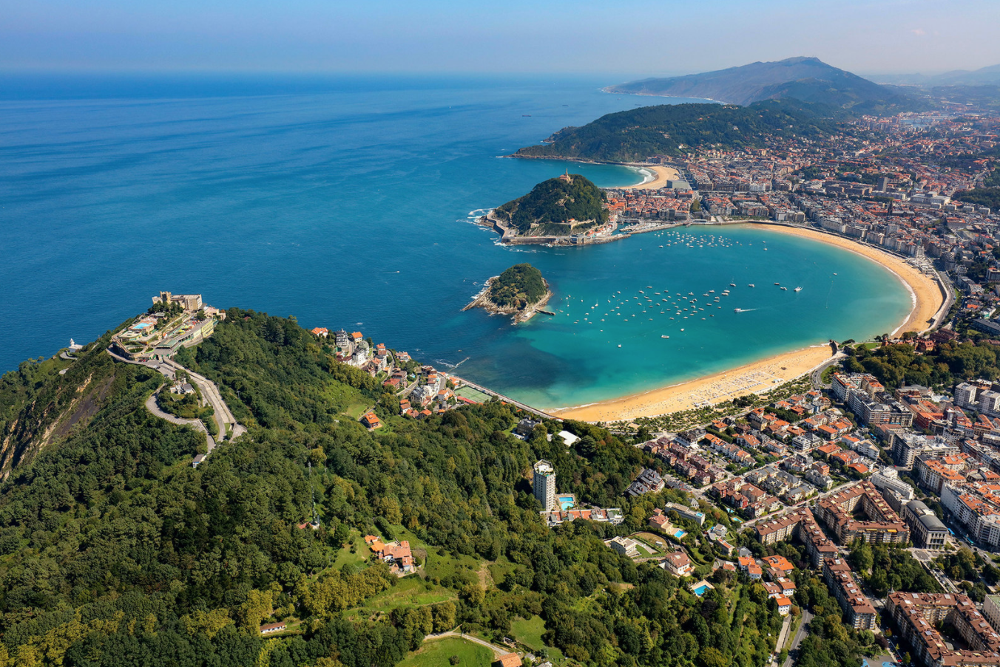

San Sebastián's north coast is one of the rainiest parts of Spain. Expect at least one rainy day in three. Usually intermittent — not all-day washouts. Rain shell stays in the bag at all times. The city is beautiful in the rain.
Long evenings. Sun sets late over the Bay of Biscay — golden hour on La Concha starts around 8:15 PM. Perfect for a post-pintxos paseo along the boardwalk.
What to pack: Coastal and temperate — similar to Paris but wetter. Light jacket, rain shell (essential), comfortable walking shoes. Not beach-swim weather for most people, but wade-able on a warm afternoon. Layers for evening pintxos along the waterfront.
Drive from the Pyrenees to the coast. Arrive by early afternoon, check in, and take your first walk along La Concha — one of Europe's most beautiful urban beaches.
Pack up and depart Lescun. Drive down the Aspe Valley, then west toward Spain. Two route options:
Stop for lunch en route — Pamplona's old town is pleasant if you have 30 minutes to spare.
Arrive in San Sebastián. Park at the lodging (confirm parking situation when booking — street parking is difficult in the center). Check in. Drop bags. Change out of mountain clothes.
Walk along La Concha. This is why you came. The sweeping crescent of beach, the Belle Époque railing along the paseo, Monte Urgull on one end and Monte Igueldo on the other. Walk the full promenade (about 25 minutes end to end) or just find a bench and take it in. Lucy will love the water and the seagulls.
The beach itself is sandy and gentle — if it's warm enough, let Lucy put her feet in the sand. Not a swimming day, but it's still beautiful.
Pintxos in the Parte Vieja. Welcome to the best food city on this trip. The Old Town has dozens of pintxos bars packed into a few narrow streets. The ritual: walk in, order a drink (txakoli — the local sparkling wine, or a beer/cider), grab 2–3 pintxos from the bar, eat standing, move to the next place. 3–4 bars = a full dinner.
With Lucy, this works better than a sit-down restaurant — you're in and out of each place in 15–20 minutes. She rides in the carrier or stroller through the pedestrian streets. Peak pintxos hour is 8–9 PM, but going at 7 PM means less crowding and more space.
Full day in San Sebastián. The anchor is Monte Urgull — the hill at the east end of La Concha with panoramic views of the city and coast. The rest is food and walking.
Coffee in the Parte Vieja. Walk through the Mercado de la Bretxa (the main market) — beautiful produce, cheese, jamón, fish. Good for provisions and photos. The nearby Mercado de San Martín is smaller but has prepared food stalls if you want a sit-down breakfast.
Walk up Monte Urgull. Start from the Parte Vieja — multiple paths lead up from the old town streets and from the Paseo Nuevo (the coastal path on the north side). The hill is ~120m high. The path is paved/stepped in most sections — doable with a carrier. At the top: a fortress (Castillo de la Mota), a giant Cristo statue, and 360° views of La Concha, the old town, and the open Atlantic.
Pintxos round two. Try different bars than last night. Lunchtime pintxos are slightly different from the evening — more hot dishes, fewer crowds. Stand at the bar, point at what looks good, order a drink. This is the easiest and best eating you'll do on the entire trip.
Back to the lodging for Lucy's nap. Or, if she falls asleep in the carrier, walk along La Concha while she sleeps. If the weather is warm, sit on the beach. Read. Decompress.
Two options for the late afternoon:
Evening pintxos. Try bars in the Gros neighborhood (east side of the river) for a change from the old town — slightly more local, fewer tourists, equally excellent food. Cross the river on the Puente de la Zurriola.
Last full day. Tomorrow you drive to Biarritz and take the train back to Paris. Keep today light. One anchor, and prep for the transition.
Last morning walk. La Concha one more time, or explore any streets in the Parte Vieja you haven't seen. Saturday mornings in the old town are lively — market, shops open, locals doing their weekend routine.
Zurriola Beach. The surfer beach east of the river. Younger, more energetic vibe than La Concha. Good for watching surfers. The Kursaal conference center (Moneo's glass cubes) is at the east end — striking architecture. Or just return to La Concha — no one's judging.
Final pintxos or a proper sit-down lunch. If you want one nice meal, this is the time. Several restaurants in the Parte Vieja and Gros neighborhoods offer excellent Basque cuisine at reasonable prices (by San Sebastián standards). Reservations helpful for Saturday lunch.
Pack for tomorrow. Gas up the car for the Biarritz drop-off. Buy any last items — txakoli to bring home, Basque cheese, chocolates from the old town shops. Rest.
Last evening in San Sebastián. One more pintxos crawl, or a quiet dinner. Enjoy the sunset over La Concha.
This is not an exhaustive list. Walk the streets and follow the crowds. The concentration of excellent bars in the old town is absurd — you can't really go wrong.
Everything is walkable. La Concha, the Parte Vieja, Gros, Monte Urgull — all within a 20-minute walk of each other. You won't need the car in the city. Park it and forget it until departure day.
Stroller vs. carrier: The Parte Vieja streets are narrow, pedestrianized, and flat — stroller works fine. Monte Urgull requires the carrier. La Concha promenade is wide and paved — either works.
Prepared March 2026. Verify hours, prices, and reservation requirements before travel.
¡Buen provecho! 🇪🇸